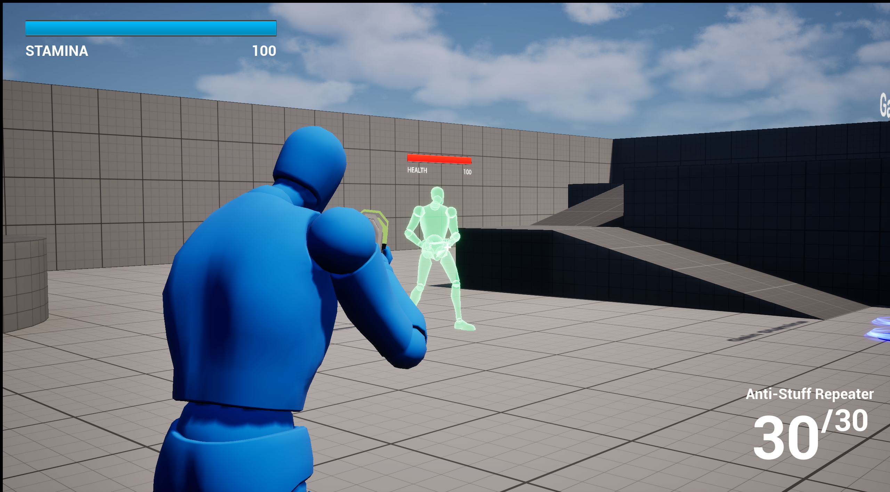
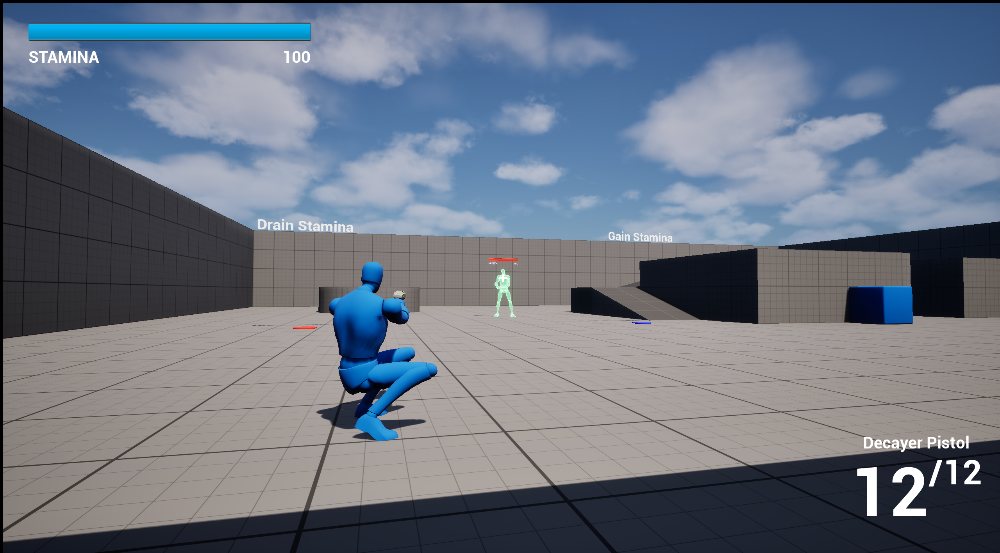

Project 4
ThirdPerson Shooter
A third-person shooter game made in Unreal Engine as a one-day challenge, featuring different weapons, third-person movement and aiming, as well as health reduction and regeneration.

The Challenge
I was given one day to build a third-person shooter in Unreal Engine using only Blueprints. No shortcuts, no pre-made weapon systems, just me, the engine, and a ticking clock. The goal wasn't to make something polished, but to prove I could design, implement, and connect multiple game systems under real pressure.
What I Set Out to Build
I was given a small but meaningful feature set:
- Two ranged weapons with different damage, fire rates, and behaviors:
- A rifle/minigun: 15 damage per bullet, 4 rounds/second, straightforward.
- A pistol: 5 damage per bullet with a bleeding effect (2 damage/sec for 10 seconds, resetting on reapplication).
- One enemy to test combat: no death for anyone, just a health bar that goes down and slowly regens.
- A stamina system: that affects movement speed in tiers (100-50% normal, 50-25% slower, 25-0% much slower). No stamina death, just fatigue slowing you down.
- An HUD: showing stamina, current weapon, and ammo.
- Two interactive areas: one that increases stamina (like healing) and one that decreases it (like damage).
The Extra Mechanics I Added
Beyond the core requirements, I wanted the game to feel more like a real shooter, so I added a few things on my own:
- Crouching – because I wanted to learn how to move between player movement states.
- Aim Down Sights (ADS) – tighter camera, slower movement, better precision.
- Weapon swapping – fluid switching between the rifle and pistol during combat.
- Aim offset – so the character's upper body actually rotates toward the reticle while moving. It's a small detail, but it made the character feel alive instead of stiff.
My Design Process
I started from Unreal's Third-Person Template to save time hunting for assets. That decision alone made the difference—it gave me a working character and camera so I could jump straight into mechanics.
From there, I worked in a specific order that made sense to me:
- Weapons, aiming, and crouching first – I wanted the core shooting and character movement to feel right before anything else. Getting the rifle and pistol working, swapping between them, aiming down sights, and crouching gave me a solid foundation to build on.
- Then the HUD – Once the weapons felt good, I needed to see what was happening. Stamina bar, weapon indicator, ammo counter, all the real-time feedback a player needs.
- Then the enemy – With the player fully functional, I built the test enemy. Health bar, damage reactions, and that slow health regen. No enemy death, just a punching bag to test my weapons.
- Stamina and interaction zones last – I saved the stamina system and the two interactable areas (increase/decrease stamina) for the end. Tuning the movement speed tiers took some trial and error to get the fatigue feeling right, slowing down just enough to be noticeable but not frustrating.
One thing I'm proud of is the bleeding effect logic. Restarting the bleed timer on reapplication took a few tries to get right in Blueprints, but once it clicked, it felt clean. The aim offset was another satisfying win—getting the spine rotation to play nicely with movement animations took some trial and error.
What Made It Hard
The biggest challenge wasn't code, it was assets. Finding usable sounds and visual effects on short notice forced me to be resourceful and adapt fast. In a real dev environment, that's exactly the kind of constraint you face.
What I Learned About Myself
This project gave me more than technical practice. It showed me how I work under a tight deadline. I learned to prioritize ruthlessly, accept small imperfections, and keep moving forward instead of getting stuck perfecting one system. That pressure felt surprisingly real, and useful. I can see now how a game studio environment demands exactly that mindset.
Also, I learned that I like adding the little things. Crouching, ADS, aim offsets—none of them were required, but they're what make a game feel responsive and satisfying. That's the kind of developer I want to be: someone who cares about the feel, not just the checklist.
Final Thought
It's just a simple prototype. No death, one enemy, a few interactions. But for me, it was a glimpse into what it feels like to build across multiple systems—combat, UI, movement, interaction, animation—all in a single day.
Project Media
